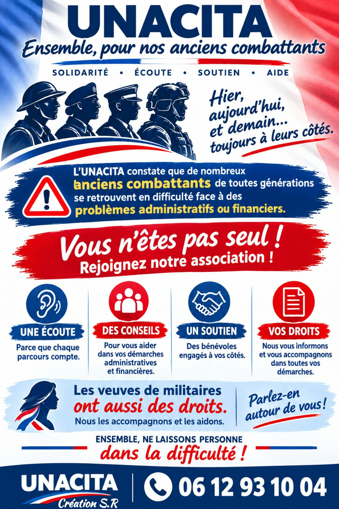

Un droit oublié ? Un dossier qui bloque ?
Carte du combattant, carte de veuve,
aides : on s'en occupe avec vous.
Parce que chaque parcours compte. Un premier échange, sans jugement.
Carte du combattant, carte de veuve, aides : on vous guide.
Des bénévoles engagés à vos côtés, jusqu'à ce que votre dossier soit réglé.
Nous vérifions vos droits avec vous et remplissons les dossiers ensemble.